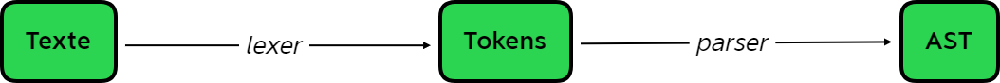

ItemEngine est un programme de spécification de grammaire écrit en python. Il fournit un ensemble d'outils pour créer, paramétrer, tester et utiliser des langages.
Ce programme offre la possibilité de décrire des grammaires formelles et naturelles (resp. sans et avec ambiguïtés) dans un formalisme simple puisque il dispose d'un langage pour se faire.
Le projet fait suite à deux précédents, Genelang et TextEngine. Chacun avait des lacunes et des défauts majeurs qui les rendaient inutilisables lorsque les grammaires décrites étaient trop lourdes ou complexes. Leurs processus étaient lents, restreints à des cadres d'application très limités, remplis de bugs, difficile à maintenir, etc...
Le fonctionnement de ItemEngine a donc été pensé et structuré pour prévenir ces défauts. C'est la raison de nombreux choix de développement qui seront explicités dans la suite de ce document.
ItemEngine est constitué de différents modules qui gèrent tous une partie spécifique du processus complet :
Le module rules gère la définition des règles de grammaire, et contient un ensemble de classes dédiées à cela.
Le module build gère l'optimisation des règles fournies par l'utilisateur ainsi que l'écriture de l'interpréteur associé à ces règles.
Le module items contient les classes abstraites représentant les éléments utilisés et fabriqués par les règles de grammaires (ex : jetons, lemmes, groupes, ...)
Regroupement des constantes utilisées dans le package.
Quelques classes et fonctions utilisées dans le package sans appartenance précise à un module.
Chacun de ces modules sera expliqué plus bas.
Les classes de ce module définissent des modèles de règle atomiques et composites. Définir des règles de grammaire complexes se fait alors en composant ces modèles.
Classe générique dont hérite toutes les autres. Elle contient les comportement communs à tous les types de règles.
Ces classes permettent de décomposer trois catégories de règles, respectivement celles : sans sous-règle, ayant 1 sous-règle, ayant une liste de sous-règles de 2 éléments ou plus
Ces classes permettent la distinction entre les règles composées d'une collection ordonnée de sous-règles de celles composées d'un collection non-ordonné et sans répétition de sous-règles
Cette classe représente les règles qui peuvent être ignorées lors de la recherche de motifs. Ex : vendu(e)(s) où le 'e' et le 's' peuvent être chacun ignorés, ce qui permettra à la règle de confirmer 'vendu', 'vendus', 'vendue' et 'vendues'.
Atome essentiel de la structure, c'est cette classe qui permettra de valider/invalider les éléments constitutifs
Autre élément primordial de la structure, cette classe n'est en réalité jamais instanciée directement par l'utilisateur puisque elle ne possède que deux instances utiles déjà créées dans le module : VALID et ERROR. Ces deux instances permettent au programme de savoir quand la règle a trouvé ou non une correspondance dans le texte. Nous verrons plus loin comment.
Ce modèle de règle englobe une sous-règle, et permet le comportement suivant. Si la sous-règle valide une partie du texte, Optional se contente de transmettre l'information, dans le cas où la sous-règle n'est pas validée par le texte, Optional sera quand même valide mais sans sous-éléments. Ainsi, peut-importe le contenu du texte, Optional sera toujours valide. On peut simplfier le comportement de ce modèle par :
Optional(X) # recherche X, 0 ou 1 fois
Sur le même principe qu'Optional, ce modèle de règle sera toujours valide. La différence est que, la sous-règle interne sera recherchée tant que la précédente itération sera valide. On peut simplifier le comportement de ce modèle par :
Repeat(X) # recherche X, 0 fois ou plus
Ce modèle de règle représente la mise en série de ses sous-règles. Le cas le plus simple sera alors résumé par :
All(X, Y) # recherche X puis Y
Note : l'ordre des sous-règles est important
All(X, Y) != All(Y, X)
Ce modèle de règle représente la mise en dérivation de ses sous-règles. Le cas le plus simple sera alors résumé par :
Any(X, Y) # recherche X ou Y
Note : l'ordre des sous-règles n'importe pas
Any(X, Y) == Any(Y, X)
Ce modèle représente une règle de grammaire 'terminée'. Elle permet d'attribuer un nom à sa sous-règle ainsi qu'une priorité vis-à-vis des autres règles nommées.
Branch(name="VAR", rule=All(Match(letters), Repeat(Match(letters)))
Branch(name="INT", rule=All(Match(digits), Repeat(Match(digits)))
Ce modèle représente l'ensemble des règles d'une grammaire.
Note : Comme pour Any, l'ordre des branches n'importe pas.
BranchSet(X, Y) == BranchSet(Y, X)
Pour les règles suivantes :
On pourrait écrire le pseudo-code ci-dessous :
space = ' '
letters = 'abcdefghijklmnopqrstuvwxyz'
digits = '0123456789'
grammar = BranchSet(
Branch(name="SPC", rule=All(Match(space), Repeat(Match(space))),
Branch(name="VAR", rule=All(Match(letters), Repeat(Match(letters))),
Branch(name="INT", rule=All(Match(digits), Repeat(Match(digits))),
Branch(name="ADD", rule=Match('+')),
Branch(name="SUB", rule=Match('-')),
Branch(name="MUL", rule=Match('*')),
Branch(name="DIV", rule=Match('/')),
Branch(name="LP", rule=Match('(')),
Branch(name="RP", rule=Match(')'))
)
Si on considère le texte suivant 'Quel est le resultat de 5 + 40 * 10 ?'. On peut distinguer différentes sortes de motifs.
D'abord les mots 'Quel', 'est', 'le', 'resultat', 'de' ;
Puis les nombres '5', '40' et '10';
Et les symboles '+', '*', '?'.
Qui composent la phrase, et qui sont définis, plus ou moins clairement dans le langage dont cette phrase est issue.
Ici un hybride entre le français composé de mots et de ponctuation, et le langage mathématique composé de nombres et d'opérateurs.
Notre cerveau est équipé de la machinerie permettant l'apprentissage de ces langages, c'est ce qui nous permet de savoir que cette phrase attends la réponse 405. Mais ce n'est pas le cas d'un ordinateur, qui n'est pas équipé à priori pour ce type de tâches.
Une première réflexion sur les étapes nécessaires à ce qu'une machine puisse aboutir à ce même résultat serait : Décomposer la phrase en sous-motifs, puis recomposer ces sous-motifs en structures qui puisse prendre en compte les règles de grammaire que nous connaissons. Ces deux étapes sont généralement nommées en interprétation de langage lexing et parsing, et sont réalisées respectivement par un lexer et un parser.
Le lexer transforme du texte en tokens, tandis que le parser transforme ces tokens en AST
Une approche naïve pour décrire à un ordinateur comment découper cette phrase en tokens, serait de lui donner la liste des expressions recherchées associées à leur type :
| expression | type |
|---|---|
| Quel | MOT |
| est | MOT |
| le | MOT |
| resultat | MOT |
| de | MOT |
| 5 | NOMBRE |
| 40 | NOMBRE |
| 10 | NOMBRE |
| + | PLUS |
| * | MULTIPLIER |
| ? | QUESTION |
| ESPACE |
Ainsi à chaque fois qu'une expression est trouvée dans le texte, le programme peut facilement la retrouver et lui assigner le type correspondant. Mais on peut déjà voir les problèmes liés à cette approche. Elle nécessitera de connaître et d'écrire à l'avance tous les motifs possibles, sans quoi la machine ne pourra pas les lire. Et c'est la plupart du temps impossible car cette liste devrait contenir une infinité de motifs.
Pour résoudre cette problématique, on incluera le principe des modèles de motifs, qui dans notre cas sera utile pour les mots et les nombres.
Note : les modèles ... écrits entre r'...' sont des expressions régulières (regex)
| modèle | type |
|---|---|
| r'[a-zA-Z]+' | MOT |
| r'[0-9]+' | NOMBRE |
| r'[ ]+' | ESPACE |
| '+' | PLUS |
| '*' | MULTIPLIER |
| '?' | QUESTION |
étant donné un texte écrit dans un langage dont on connaît les élément constitutifs mais pas les modèles de motifs. Si on dispose d'un corpus de textes écrits dans ce langage (on dispose donc de motifs), existe t'il une procédure permettant d'induire ou de déduire les modèles de motifs ?
Comme les motifs ESPACE ne servent ici que comme séparateurs, ils ne seront pas conservés.
Voici une implémentation en python 3 du programme décrit ci-dessus et son output :
from typing import List, Tuple, Dict
import re
patterns: Dict[str, re.Pattern] = {
'MOT': re.compile(r"[a-zA-Z]+"),
'NUMBER': re.compile(r"[0-9]+"),
'ESPACE': re.compile(r"[ ]+"),
'PLUS': re.compile(r"\+"),
'MULTIPLIER': re.compile(r"\*"),
'QUESTION': re.compile(r"\?"),
}
def tokenize(text: str) -> List[Tuple[str, str]]:
tokens: List[Tuple[str, str]] = []
index = 0
while index < len(text):
for name, pattern in patterns.items():
match = pattern.match(text[index:])
if match:
content = match.group()
index += len(content)
if name != "ESPACE":
tokens.append((name, content))
continue
return tokens
if __name__ == '__main__':
tokens = tokenize("Quel est le resultat de 5 + 40 * 10 ?")
for token in tokens:
print(token)
('MOT', 'Quel')
('MOT', 'est')
('MOT', 'le')
('MOT', 'resultat')
('MOT', 'de')
('NUMBER', '5')
('PLUS', '+')
('NUMBER', '40')
('MULTIPLIER', '*')
('NUMBER', '10')
('QUESTION', '?')
Cette approche possède certains défauts :
| mot | définition |
|---|---|
| Class | Une classe est un modèle pour des objets (alors appelés instances), elle contient un ensemble de champs ainsi que des méthodes |
| Abstract Class |
Une classe abstraite est une classe qui ne peut pas avoir d'instances. En revanche, on peut faire hériter d'autres classes d'une classe abstraite. L'utilisation typique d'une classe abstraite est de définir des données requises et des comportements que toutes ses sous-classes devront implémenter. |
| Field | Un champ appartient à une classe, il définit une association clef-valeur. On peut ainsi stocker des valeurs dans les instances d'une classe |
| Variable | Une variable est un nom auquel est associé une valeur. Pendant l'exécution d'un programme, la variable représente une valeur en mémoire. |
| Constant | Une constante est un nom auquel est associé une valeur. Cette valeur ne changera pas pendant l'exécution d'un programme. |
| Parameter | Un paramètre est un nom associé à une valeur, représentant une valeur définie hors du contexte d'une fonction. Pendant l'exécution d'un programme, le paramètre prendra sa valeur lors de l'appel de la fonction. Et dans le contexte d'exécution de la fonction, sera équivalent à une variable ou à une constante. |
| Method | Une méthode est une fonction associée à une classe. Elle retranscrit alors un comportement des instances de cette classe. |
| Instance | Une instance est un objet définit à partir d'un modèle (classe de l'objet). |
| Function | Une fonction permet d'associer des données en entrée à de nouvelles données en sortie. |
| AST (Abstract Syntax Tree) | Un arbre de syntaxe abstraite permet de représenter une structure dans le texte. |
| CST (Concrete Syntax Tree) | Un arbre de syntaxe concrète permet de représenter une structure du texte et d'associer des comportement à ces structures. |
| Lexer (Lexical Analyser) | Un lexer est un algorithme permettant de découper un texte en tokens qui le constitue. Un lexer est la retranscription algorithmique d'un ensemble de règles descriptive des modèles de motifs d'un langage. |
| Parser | Un parser est un algorithme permettant de construire un AST à partir de tokens. Un parser est la retranscription algorithmique d'un ensemble de règles de grammaires. |
| Token |
Un jeton représente généralement une portion d'un texte à laquelle on à associé un type précis. Un token simple, contiendra seulement la partie du texte en question et le type associé. Un token plus complet aura aussi des valeurs telles que :
|